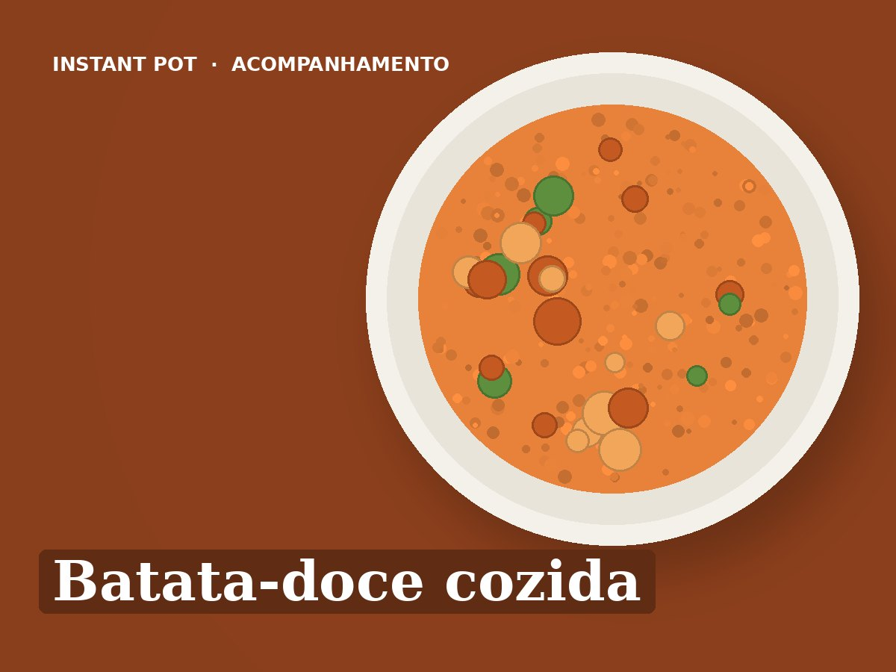

Batata-doce cozida
Ingredientes
- 800 g de batata-doce (4 médias)
- 250 ml de água
- Azeite, sal e oregãos ou canela q.b.
Preparação
- Lavar bem a batata-doce. Pôr a água na panela e o suporte de vapor (trivet) por cima, com a batata-doce.
- Pressão alta: 15 minutos para batatas inteiras médias (20 minutos se forem grandes), ou 6 minutos em pedaços de 4 cm.
- Inteiras: libertação natural 10 minutos. Em pedaços: libertação rápida.
- Servir com um fio de azeite e sal, ou com canela. Dura 4 dias no frigorífico.